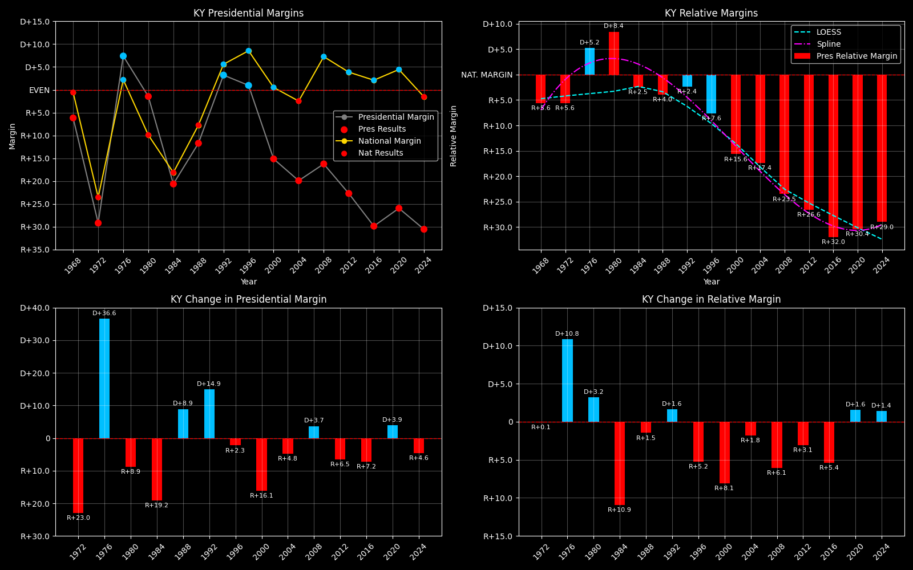

← Back to Map

Kentucky (KY) statewide
Kentucky (KY) — Data
| Year | EVs | D | R | Margin | Rel. Margin | Nat. Margin | 2-Party Margin | Margin Δ | Rel. Margin Δ | Nat. Margin Δ | 2-Party Margin Δ | Other votes | Total votes |
|---|
| 1968 | 9 | 397,541(37.8%) | 462,411(43.9%) | R+6.2 | R+5.6 | R+0.6 | R+7.5 | | | | | 193,098(18.3%) | 1,053,050 |
| 1972 | 9 | 371,884(35.4%) | 678,262(64.6%) | R+29.2 | R+5.6 | R+23.5 | R+29.2 | R+23.0 | R+0.1 | R+23.0 | -0.21631356171055066 | 0(0.0%) | 1,050,146 |
| 1976 | 9 | 615,323(53.7%) | 530,550(46.3%) | D+7.4 | D+5.2 | D+2.2 | D+7.4 | D+36.6 | D+10.8 | D+25.7 | 0.3657291525612516 | 0(0.0%) | 1,145,873 |
| 1980 | 9 | 616,197(48.1%) | 634,861(49.5%) | R+1.5 | D+8.4 | R+9.9 | R+1.5 | R+8.9 | D+3.2 | R+12.1 | -0.08889972091795718 | 31,078(2.4%) | 1,282,136 |
| 1984 | 9 | 536,640(39.7%) | 815,345(60.3%) | R+20.6 | R+2.5 | R+18.1 | R+20.6 | R+19.2 | R+10.9 | R+8.2 | -0.19122646567152388 | 0(0.0%) | 1,351,985 |
| 1988 | 9 | 580,368(44.1%) | 734,281(55.9%) | R+11.7 | R+4.0 | R+7.7 | R+11.7 | D+8.9 | R+1.5 | D+10.4 | 0.08906968235563356 | 0(0.0%) | 1,314,649 |
| 1992 | 8 | 665,104(44.8%) | 617,178(41.5%) | D+3.2 | R+2.4 | D+5.6 | D+3.7 | D+14.9 | D+1.6 | D+13.3 | 0.1544509101310919 | 203,944(13.7%) | 1,486,226 |
| 1996 | 8 | 636,614(46.1%) | 623,283(45.2%) | D+1.0 | R+7.6 | D+8.6 | D+1.1 | R+2.3 | R+5.2 | D+3.0 | -0.026794530208464055 | 120,396(8.7%) | 1,380,293 |
| 2000 | 8 | 638,923(41.4%) | 872,520(56.5%) | R+15.1 | R+15.6 | D+0.5 | R+15.5 | R+16.1 | R+8.1 | R+8.0 | -0.16513332900038846 | 32,583(2.1%) | 1,544,026 |
| 2004 | 8 | 712,524(39.7%) | 1,069,161(59.6%) | R+19.9 | R+17.4 | R+2.5 | R+20.0 | R+4.8 | R+1.8 | R+3.0 | -0.04561607461894815 | 10,894(0.6%) | 1,792,579 |
| 2008 | 8 | 751,985(41.2%) | 1,048,462(57.4%) | R+16.2 | R+23.5 | D+7.3 | R+16.5 | D+3.7 | R+6.1 | D+9.7 | 0.03549982817838748 | 26,061(1.4%) | 1,826,508 |
| 2012 | 8 | 679,370(37.8%) | 1,087,189(60.5%) | R+22.7 | R+26.6 | D+3.9 | R+23.1 | R+6.5 | R+3.1 | R+3.4 | -0.06618646073063095 | 30,274(1.7%) | 1,796,833 |
| 2016 | 8 | 628,854(32.7%) | 1,202,971(62.5%) | R+29.8 | R+32.0 | D+2.1 | R+31.3 | R+7.2 | R+5.4 | R+1.8 | -0.08255756786547408 | 91,573(4.8%) | 1,923,398 |
| 2020 | 8 | 772,474(36.2%) | 1,326,646(62.1%) | R+25.9 | R+30.4 | D+4.4 | R+26.4 | D+3.9 | D+1.6 | D+2.3 | 0.04941052234493787 | 37,597(1.8%) | 2,136,717 |
| 2024 | 8 | 704,043(33.9%) | 1,337,494(64.5%) | R+30.5 | R+29.0 | R+1.5 | R+31.0 | R+4.6 | D+1.4 | R+6.0 | -0.04627936231678237 | 32,993(1.6%) | 2,074,530 |
Column explanations
- Year
- Election year.
- EVs
- Number of electoral votes allocated to this state or unit.
- D
- Number of votes for the Democratic candidate (raw count(pct%)).
- R
- Number of votes for the Republican candidate (raw count(pct%)).
- Margin
- Margin between the two major-party candidates, including third-party votes ((D - R)/total).
- Rel. Margin
- The presidential margin relative to the national presidential margin (Margin - Nat. Margin).
- Nat. Margin
- The national presidential margin for that year, including third-party votes ((D_total - R_total)/total_votes).
- 2-Party Margin
- Margin between the two major-party candidates, ignoring third-party votes ((D - R)/(D + R)).
- Δ
- Change (delta) in the value from the previous election year. Blank if no data for previous year.
- Other votes
- Number of votes for third-party (other) candidates (raw count(pct%)).
- Total votes
- Total voter turnout or ballots cast (when provided).